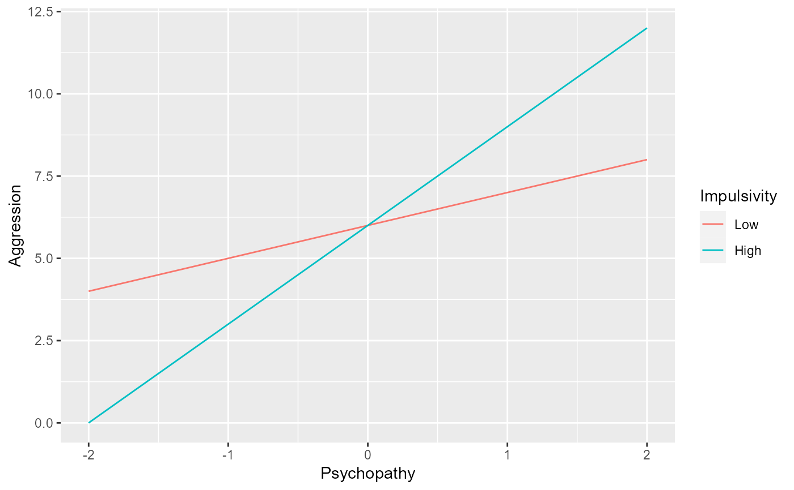

generates simple slopes plot from moderated regression equation
modregplot( predictor_range = c(-4, 4), moderator_values = c(-1, 0, 1), intercept = 0, predictor_coef = 0, moderator_coef = 0, interaction_coef = 0, predictor_label = "X", criterion_label = "Y", moderator_label = "Moderator" )
| predictor_range | a length 2 vector of the range of values to be plotted on the predictor variable, Default: c(-4, 4) |
|---|---|
| moderator_values | a vector of moderator values to be plotted, Default: c(-1, 0, 1) |
| intercept | the intercept of the regression equation, Default: 0 |
| predictor_coef | the regression coefficient for the predictor variable, Default: 0 |
| moderator_coef | the regression coefficient for the moderator variable, Default: 0 |
| interaction_coef | the interaction term coefficent, Default: 0 |
| predictor_label | the label for the predictor variable, Default: 'X' |
| criterion_label | the label for the moderator variable, Default: 'Y' |
| moderator_label | PARAM_DESCRIPTION, Default: 'Moderator' |
a ggplot of the simple slopes
modregplot( predictor_range = c(-2, 2), moderator_values = c(Low = -1, High = 1), intercept = 6, predictor_coef = 2, moderator_coef = 0, interaction_coef = 1, predictor_label = "Psychopathy", criterion_label = "Aggression", moderator_label = "Impulsivity" )